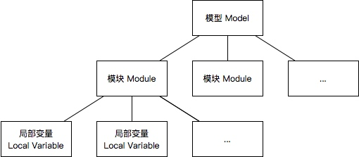

<!DOCTYPE html><html>

<head>
<meta charset="utf-8">
<title># PRISM部分语言基础</title>
<style>
html,body{ font-family: "SF UI Display", ".PingFang SC","PingFang SC", "Neue Haas Grotesk Text Pro", "Arial Nova", "Segoe UI", "Microsoft YaHei", "Microsoft JhengHei", "Helvetica Neue", "Source Han Sans SC", "Noto Sans CJK SC", "Source Han Sans CN", "Noto Sans SC", "Source Han Sans TC", "Noto Sans CJK TC", "Hiragino Sans GB", sans-serif;
  font-size: 16px;
  color:#222
  -webkit-text-size-adjust:none;  min-width: 200px;
  max-width: 760px;
  margin: 0 auto; padding: 1rem;
  line-height: 1.5rem;

}
h1,h2,h3,h4,h5,h6{font-family: "PT Sans","SF UI Display", ".PingFang SC","PingFang SC", "Neue Haas Grotesk Text Pro", "Arial Nova", "Segoe UI", "Microsoft YaHei", "Microsoft JhengHei", "Helvetica Neue", "Source Han Sans SC", "Noto Sans CJK SC", "Source Han Sans CN", "Noto Sans SC", "Source Han Sans TC", "Noto Sans CJK TC", "Hiragino Sans GB", sans-serif;
text-rendering:optimizelegibility;margin-bottom:1em;font-weight:bold; line-height: 1.8rem;

}
h1,h2{position:relative;padding-top:1rem;padding-bottom:0.2rem;margin-bottom:1rem;background:url('data:image/png;base64,iVBORw0KGgoAAAANSUhEUgAAACgAAAABCAYAAACsXeyTAAAACXBIWXMAAAsTAAALEwEAmpwYAAAAFUlEQVQIHWNIS0sr/v//PwMMDzY+ADqMahlW4J91AAAAAElFTkSuQmCC') bottom left repeat-x;}
h2{padding-top:0.8rem;padding-bottom:0.2rem;}
h1{ font-size: 1.6rem;}
h2{ font-size: 1.4rem;}
h3{ font-size: 1.2rem;}
h4{ font-size: 1.1rem;}
h5{ font-size: 1.0rem;}
h6{ font-size: 0.9rem;}

table{border-collapse:collapse;border-spacing:0;
  margin-top: 0.8rem;
  margin-bottom: 1.4rem;
}
tr{  background-color: #fff;
  border-top: 1px solid #ccc;}
th,td{padding: 5px 14px;
  border: 1px solid #ddd;}

blockquote{font-style:italic;font-size:1.1em;line-height:1.5em;padding-left:1em; border-left:4px solid #D5D5D5;    margin-left: 0;
    margin-right: 0;
    margin-bottom: 1.5rem; }

a{color:#1863a1}

pre,code,p code,li code{font-family:Menlo,Monaco,"Andale Mono","lucida console","Courier New",monospace}

pre{-webkit-border-radius:0.4em;-moz-border-radius:0.4em;-ms-border-radius:0.4em;-o-border-radius:0.4em;border-radius:0.4em;border:1px solid #e7dec3;line-height:1.45em;font-size:0.9rem;margin-bottom:2.1em;padding:.8em 1em;color:#586e75;overflow:auto; background-color:#fdf6e3;}

p code,li code{display:inline-block;white-space:no-wrap;background:#fff;font-size:0.9rem;line-height:1.5em;color:#555;border:1px solid #ddd;-webkit-border-radius:0.4em;-moz-border-radius:0.4em;-ms-border-radius:0.4em;-o-border-radius:0.4em;border-radius:0.4em;padding:0 .3em;margin:-1px 4px;}
p pre code,li pre code{font-size:1em !important;background:none;border:none}

img{max-width:100%;-webkit-border-radius:0.3em;-moz-border-radius:0.3em;-ms-border-radius:0.3em;-o-border-radius:0.3em;border-radius:0.3em;-webkit-box-shadow:rgba(0,0,0,0.15) 0 1px 4px;-moz-box-shadow:rgba(0,0,0,0.15) 0 1px 4px;box-shadow:rgba(0,0,0,0.15) 0 1px 4px;-webkit-box-sizing:border-box;-moz-box-sizing:border-box;box-sizing:border-box;border:#fff 0.5em solid}


hr {
  height: 0;
  margin: 15px 0;
  overflow: hidden;
  background: transparent;
  border: 0;
  border-bottom: 1px solid #ddd;
}


/*

Orginal Style from ethanschoonover.com/solarized (c) Jeremy Hull <sourdrums@gmail.com>

*/

.hljs {
  display: block;
  overflow-x: auto;
  padding: 0.5em;
  background: #fdf6e3;
  color: #657b83;
  -webkit-text-size-adjust: none;
}

.hljs-comment,
.diff .hljs-header,
.hljs-doctype,
.hljs-pi,
.lisp .hljs-string {
  color: #93a1a1;
}

/* Solarized Green */
.hljs-keyword,
.hljs-winutils,
.method,
.hljs-addition,
.css .hljs-tag,
.hljs-request,
.hljs-status,
.nginx .hljs-title {
  color: #859900;
}

/* Solarized Cyan */
.hljs-number,
.hljs-command,
.hljs-string,
.hljs-tag .hljs-value,
.hljs-rule .hljs-value,
.hljs-doctag,
.tex .hljs-formula,
.hljs-regexp,
.hljs-hexcolor,
.hljs-link_url {
  color: #2aa198;
}

/* Solarized Blue */
.hljs-title,
.hljs-localvars,
.hljs-chunk,
.hljs-decorator,
.hljs-built_in,
.hljs-identifier,
.vhdl .hljs-literal,
.hljs-id,
.css .hljs-function,
.hljs-name {
  color: #268bd2;
}

/* Solarized Yellow */
.hljs-attribute,
.hljs-variable,
.lisp .hljs-body,
.smalltalk .hljs-number,
.hljs-constant,
.hljs-class .hljs-title,
.hljs-parent,
.hljs-type,
.hljs-link_reference {
  color: #b58900;
}

/* Solarized Orange */
.hljs-preprocessor,
.hljs-preprocessor .hljs-keyword,
.hljs-pragma,
.hljs-shebang,
.hljs-symbol,
.hljs-symbol .hljs-string,
.diff .hljs-change,
.hljs-special,
.hljs-attr_selector,
.hljs-subst,
.hljs-cdata,
.css .hljs-pseudo,
.hljs-header {
  color: #cb4b16;
}

/* Solarized Red */
.hljs-deletion,
.hljs-important {
  color: #dc322f;
}

/* Solarized Violet */
.hljs-link_label {
  color: #6c71c4;
}

.tex .hljs-formula {
  background: #eee8d5;
}

body {
  background-color:#eeeeee;
  margin:0px;
  padding:0px;
  min-width:600px;
}

/* Basic (2 column, liquid) layout */

div#layout-maincontainer {
  margin-left:180px;
}
div#layout-main {
  float:right;
  width:100%;
  margin:0 0 0 -180px;
}
div#layout-leftcol {
  width:180px;
  margin:0 0 0 0;
}
div#layout-footer {
  clear:both;
}

/* Banner */

#prism-banner {
  width:100%;
  height:80px;
  margin:0;
  padding:0;
  border:0;
  text-align:center;
  background-color:#6260c1; /* Right blue */
}
#prism-bannerlefthalf {
  position:absolute;
  top:0;
  left:0;
  width:50%;
  height:80px;
  margin:0;
  background-color:#272582; /* Left blue */
}
#prism-bannerrighthalf {
  position:absolute;
  top:0;
  right:0;
  width:50%;
  height:80px;
  margin:0;
  background-color:#6260c1; /* Right blue */
}
#prism-bannerlogo {
  position:absolute;
  top:0;
  left:0;
  width:75px;
  height:60px;
  margin:0;
  padding:10px 0 10px 25px;
  text-align:left;
  background-color:#272582; /* Left blue */
}
#prism-bannerurl {
  position:absolute;
  top:0;
  left:0;
  width:100%;
  height:80px;
  margin:0;
  padding:0;
  text-align:center;
}
#prism-bannerurl img {
  margin:0 100px 0 0; /* Centre URL but allow for fact RHS is wider */
}
#prism-bannerright {
  height:80px;
  background-color:#333173;
}
#prism-searchbox {
  position:absolute;
  top:28px;
  right:20px;
  text-align:right;
}
#prism-searchbox #q {
  background:#d9dbe1;
  border:1px solid #9097a2;
  padding:2px;
  width:100px;
}
#prism-searchbox #submit {
  background:#6A7389 none repeat scroll 0%;
  border-color:#9097a2 #283043 #283043 #9097a2;
  border-style:solid;
  border-width:1px;
  color:#ffffff;
  padding:1px 4px;
}

/* Main navigation bar (horizontal) */

#prism-navbar {
  clear:both;
  padding:2px 0;
  border:solid #777777;
  border-width:0 0 1px 0;
  background:#999999 url('../images/nav_top.png') 0 0 repeat-x;
  font-weight:bold;
  text-align:center;
}

#prism-navbarinner {
  margin:0 auto;
}

ul#prism-navbarmenu {
  display:inline-block; /* So we can center this horizontally */
  list-style-type:none;
  margin:0;
  padding:2px;
}

ul#prism-navbarmenu > li {
  display:block;
  float:left;
  border:0;
  margin:0;
  padding:0;
  background:none;
  position:relative;
}

li.prism-navitem > a, li.prism-navitemsel > a {
  display:block;
  padding:2px;
  border-color:#999999;
  border-style:solid;
  border-width:1px;
  border-radius:4px 4px 0 0;
}

li.prism-navitem > a.prism-navitemhover, li.prism-navitemsel > a.prism-navitemhover {
  background-color:#bbbbbb;
  border-color:#777777;
  border-width:1px 1px 0 1px;
  color:white;
}

li.prism-navitem > a.prism-navitemhoverempty, li.prism-navitemsel > a.prism-navitemhoverempty {
  background-color:#bbbbbb;
  border-color:#777777;
  border-radius:4px;
}

li.prism-navitem > a:link { color:black; text-decoration:none; }
li.prism-navitem > a:visited { color:black; text-decoration:none; }
li.prism-navitem > a:hover { color:white; text-decoration:none; }
li.prism-navitem > a:active { color:black; text-decoration:none; }

li.prism-navitemsel > a:link { color:white; text-decoration:none; }
li.prism-navitemsel > a:visited { color:white; text-decoration:none; }
li.prism-navitemsel > a:hover { color:white; text-decoration:none; }
li.prism-navitemsel > a:active { color:white; text-decoration:none; }

ul.prism-navbarsubmenu
{
  list-style-type:none;
  position:absolute;
  display:none;
  margin:0;
  padding:0;
  background:#eeeeee;
  border:solid #777777 1px;
  padding:2px;
  box-shadow:2px 2px 2px rgba(150,150,150,0.5);
}

ul.prism-navbarsubmenu li {
  font-weight:normal;
  position:relative;
  display:block;
  margin:0;
  padding:2px;
  width:auto;
  background:none;
  white-space:nowrap;
  text-align:left;
  text-decoration:none;
}

ul.prism-navbarsubmenu li:hover {
  background:#999999;
  color:#ffffff;
}

ul.prism-navbarsubmenu li:hover a {
  background:inherit;
  color:inherit;
}

li.prism-navsubitem > a:link { color:black; text-decoration:none; }
li.prism-navsubitem > a:visited { color:black; text-decoration:none; }
li.prism-navsubitem > a:hover { color:white; text-decoration:none; }
li.prism-navsubitem > a:active { color:black; text-decoration:none; }

li.prism-navsubitemsel > a:link { color:white; text-decoration:none; }
li.prism-navsubitemsel > a:visited { color:white; text-decoration:none; }
li.prism-navsubitemsel > a:hover { color:white; text-decoration:none; }
li.prism-navsubitemsel > a:active { color:white; text-decoration:none; }

/* Main content box */

#prism-mainbox {
  padding:5px 30px 100px 30px;
  border:solid #cccccc;
  border-width:0 0 1px 1px;
  background-color:#ffffff;
  border-radius:0 0 0 8px;
}
#prism-unilogo {
  float:right;
  margin:15px 0 10px 10px;
}

/* Second navigation panel (LHS) */

#prism-navbar2 {
  padding:5px 20px 250px 20px;
  background:#eeeeee url('../images/trinity.png') 0 0 no-repeat;
  color:#333333;
}
#prism-navbar2 a {
  font-size:10pt;
  color:#333333;
}
#prism-navbar2 .selflink {
  color:#000000;
  font-weight:bold;
}
#prism-navbar2 h1, #prism-navbar2 h1 a {
  margin-bottom:0.3em;
  font-size:13pt;
}
#prism-navbar2 h3, #prism-navbar2 h3 a {
  margin-bottom:0.3em;
  font-size:11pt;
}
#prism-navbar2 ul {
  margin-left:0.8em;
  padding-left:0.8em;
}
#prism-navbar2 li {
  list-style-image:url('../images/hyphen.png');
  margin-bottom:0.4em;
}
#prism-navbar2 .prism-newsitem {
  margin-top:10px;
  margin-left:5px;
  font-size:9pt;
}
#prism-navbar2 .prism-newsitem a {
  font-size:9pt;
  color:blue;
}
#prism-navbar2 hr {
  height:0;
  border:dotted #808080;
  border-width:1px 0 0 0;
}

#prism-advert {
  float:right;
  width:150px;
  /*height:180px;*/
  margin:20px 30px 0 10px;
  background:#eeeeee;
  /*background:#eeeeee url('../images/trinity.png') 0 0 no-repeat;*/
  border:solid #777777 1px;
  border-radius:7px;
  font-size:9pt;
  box-shadow:2px 2px 2px rgba(150,150,150,0.5);
}

#prism-advertheader {
  background-color:#999999;
  border-radius:6px 6px 0 0;
  color:#ffffff;
  padding:6px;
  font-size:11pt;
  font-weight:bold;
}

#prism-advertheader a {
  font-size:11pt;
  color:#ffffff;
}

#prism-advertbox {
  padding:6px;
  font-size:9pt;
}

#prism-advertbox p, #prism-advertbox a {
  font-size:9pt;
}

/* Footer */

#prism-footer {
  /*margin-left:180px;*/
  padding:20px 0 30px 0;
  text-align:center;
}

/* General components/styles */

/* Tables */

table.prism-table {
  background-color:#eeeeee;
  color:#333333;
  text-align:left;
  margin-left:auto;
  margin-right:auto;
  border-collapse:collapse;
  border:solid 2px #000000;
}
table.prism-table a {
  /*color:#333333;*/
}
table.prism-table tr.prism-th td {
  border-color:#999999;
  background-color:#cccccc;
  color:#000000;
  font-weight:bold;
  text-align:center;
}
table.prism-table tr.prism-thl td {
  border-color:#999999;
  background-color:#cccccc;
  color:#000000;
  font-weight:bold;
  text-align:left;
}
table.prism-table td {
  border:1px solid;
  border-color:#999999 #dddddd #999999 #dddddd;
  padding:1px 5px 1px 5px;
  vertical-align:top;
  text-align:left;
}
div.prism-table-caption
{
  font-weight:bold;
  text-align:center;
  margin-top:0.5em;
  margin-bottom:0.75em;
}

/* Other */

.prism-newsitem {
  padding-bottom:10px;
}
.prism-newsitemhead {
  font-weight:bold;
}

.prism-rule {
  width:100%;
  height:0px;
  border:0px;
  border-top:dashed 1px #000099;
  margin:15px 0 15px 0;
}

img.prism-image {
  display:block;
  margin-left:auto;
  margin-right:auto;
  padding:4px;
  border:solid 1px #333333;
}
.prism-image-caption {
  margin-top:5px;
  text-align:center;
  font-weight:bold;
}

ul.prism-list0 {
}
ul.prism-list0 li {
  list-style-image:url('../images/bullet0.png');
}
ul, ul.prism-list {
}
ul li, ul.prism-list li {
  list-style-image:url('../images/bullet.png');
}
ul.prism-list2, ul ul {
}
ul.prism-list2 li, li li {
  list-style-image:url('../images/bullet2.png');
}

ul.spacedout li {
  margin-top:0.8em;
  margin-bottom:0.8em;
}

.prism-box {
  background-color:#eeeeee;
  border:dotted 1px #cccccc;
  padding:0 10px 0 10px;
  width:90%; /* Need a width or else IE6 gets upset */
  overflow:auto;
}
.prism-citebox {
  background-color:#fff8dc;
  border:solid 1px #d7cca3;
  border-radius:7px;
  width:90%; /* Need a width or else IE6 gets upset */
  overflow:auto;
  box-shadow:2px 2px 2px rgba(150,150,150,0.5);
}
.prism-citeboxheader {
  background-color:#ffebcd;
  padding:5px;
}
.prism-code {
  background-color:#ffffcc;
  border:dotted 2px #999999;
  margin:10px;
  padding:10px;
  width:90%; /* Need a width or else IE6 gets upset */
  overflow:auto;
}
.prism-code-scroll {
  background-color:#ffffcc;
  border:dotted 2px #999999;
  margin:10px;
  padding:10px;
  height:500px;
  width:90%; /* Need a width or else IE6 gets upset */
  overflow:auto;
}
* html .prism-code {
  padding-bottom:1.5em; /* Nasty hack to fix IE6 scrollbar positioning */
}
.prismkeyword { font-weight:bold; }
.prismident { color:#cc0000; }
.prismnum { color:#0000cc; }
.prismcomment { font-style:italic; color:#009900; }
.prismpreproc { color:#a020f0; }

.prism-floatbox {
  clear:both;
  float:right;
  width: 100px;
  background-color:#bdced6;
  border:dotted 1px #000099;
  margin:20px 10px 20px 20px;
  padding:10px;
}

.prism-download-box {
  border:dotted 2px #000099;
  margin:15px;
  padding:15px;
}

a.prism-cite { color:#006600; }

.prism-note { color:#666666; }
.prism-note a { color:#666666; }
.prism-note a.prism-cite { color:#006600; }

.prism-task {
  vertical-align:top;
  width:47px;
  height:28px;
  float:left;
  clear:both;
}

</style>

<style> @media print{ .hljs{overflow: visible; word-wrap: break-word !important;} }</style></head><body><div class="markdown-body">
<a href="index.html">如您已了PRISM基础语法请点击这里查看哲学家进餐问题解决模型</a>
<h1 id="toc_0">PRISM部分语言基础</h1>

<h2 id="toc_1">引子</h2>

<p>PRISM语言的基础组成是模块（modules）与变量（variables）。模型由一连串可相互交互的模块组成。一个模块包含若干局部变量（local variables）。在给定时间下，这些变量的值构成了模块的状态（the state of the module）。</p>

<p></p>

<p>整个模型的全局状态（global state）由<strong>所有模块</strong>的局部状态决定（local state）。每个模块的行为（behavior）由一套指令（command）构成。指令的格式如下所示：</p>

<pre><code class="language-lisp">[] 执行条件guard -&gt; 概率_1 : 状态更新_1 + ... + 概率_n : 状态更新_n;
</code></pre>

<p>计算机科学中，guard表示能决定程序是否继续执行其下的分支的一个布尔表达式。它是作用于模型中所有变量的谓词（predicate）（这些变量自然也可以那些属于其他模块的）。指令中的每一个状态更新描述了在guard为真（true）的状态下可进行的转变（transition）。转变通过对模块中的局部变量赋新值的方式实现，可能是由其他变量构成的一个函数。每一个状态更新同样也附带了一个概率的值，描述了相对应的转变可能发生的概率。</p>

<h2 id="toc_2">范例1</h2>

<p>现在，考虑一个由两个相互独立的进程（process）组成的系统。这两个进程的状态都可以是{0, 1, 2}三种状态中的一种。从状态0开始，进程有0.2的概率转变为状态1，有0.8的概率保持原状态不变。从状态1开始，进程则会不断尝试转移至临界状态（critical state）：状态2。进程仅在其他进程不处于临界状态时才能转移到状态2。最后，若进程的状态为状态2，则该进程有可能以相等概率保持原状态或返回到状态0。该系统的一个马可夫决策过程（MDP）模型可用下面的PRSIM代码描述。接下来的章节将详细解释下面的这段代码。</p>

<pre><code class="language-lisp">// Example 1
// Two process mutual exclusion

mdp

module M1

    x : [0..2] init 0;

    [] x=0 -&gt; 0.8:(x&#39;=0) + 0.2:(x&#39;=1);
    [] x=1 &amp; y!=2 -&gt; (x&#39;=2);
    [] x=2 -&gt; 0.5:(x&#39;=2) + 0.5:(x&#39;=0);

endmodule

module M2

    y : [0..2] init 0;

    [] y=0 -&gt; 0.8:(y&#39;=0) + 0.2:(y&#39;=1);
    [] y=1 &amp; x!=2 -&gt; (y&#39;=2);
    [] y=2 -&gt; 0.5:(y&#39;=2) + 0.5:(y&#39;=0);

endmodule
</code></pre>

<h2 id="toc_3">模型类型</h2>

<!--该段内容可能较为次要-->

<p>如前文所述，PRISM语言可以背用于描述多种类型的概率模型：DTMC（离散时间马尔可夫链）、CTMC（连续时间马尔可夫链），MDP（马尔可夫决策过程）以及PTA（概率时间自动机）。欲表示要描述的模型的类型，PRISM模型需要包含<code>dtmc</code>，<code>ctmc</code>，<code>mdp</code>或<code>pta</code>中的一个作为关键词。通常我们会在文件的开头位置进行模型类型的声明，但实际上你可以在除模型内以及其他声明以外的地方进行该声明。如果文件不包含任何模型类型的声明，软件将自动将模型视为MDP模型——这也是接下来我们看到的哲学家进餐问题解决方案中用到的模型类型。</p>

<h2 id="toc_4">模块与变量</h2>

<p>前一个例子使用了两个模块：M1与M2。它们各自代表一个进程。模块声明的语法是这样的：</p>

<pre><code class="language-lisp">module name ... endmodule 
</code></pre>

<p>一个模块的定义包含了两个部分：模块所包含的变量及其指令。变量描述了可能发生的模块状态；指令描述了模块的行为，譬如，指令可能描述的是状态随着时间改变的一种方式。现在的PRISM仅支持几种简单的变量类型：它们可以是（有限的）整数，也可以是布尔值。</p>

<p>在前面的例子中我们可以观察到，每个模块有一个范围定义在[0..2]的整型变量。变量的声明就像下面这样：</p>

<pre><code class="language-lisp">x : [0..2] init 0; 
</code></pre>

<p>注意变量的初始值也被声明了（<code>init 0</code>）。布尔值的声明则如下所示。</p>

<pre><code class="language-lisp">b : bool init false; 
</code></pre>

<p>遗漏掉某个变量的初始值也是可行的：在这种情况下变量将会以范围中的最小值（或者是对布尔值来说的false）作为初始值。因此，以下所展示的变量声明等价于上面的两个代码例子。在之后的例子中我们也会展示为一个模型标示多个初始状态的可行性。</p>

<pre><code class="language-lisp">x : [0..2];
b : bool;
</code></pre>

<h2 id="toc_5">指令</h2>

<p>指令描述了每个模块的行为，它的结构由一个guard及多个状态更新构成。在我们的例子中，模块M1的第一条指令便是：</p>

<pre><code class="language-lisp">[] x=0 -&gt; 0.8:(x&#39;=0) + 0.2:(x&#39;=1); 
</code></pre>

<p>此处的guard是x=0，表示了当变量x的值为0时整个模块的行为。这里的这两个状态更新：<code>(x&#39;=0)</code>及<code>(x&#39;=1)</code>以及与其相绑定的概率，表示了x的值有0.8的概率保持在0，有0.2的概率变换到1。在研究状态变化时，我们常用<code>&#39;</code>符号表示该变量的下一个状态以便与当前状态区分。注意这里把这些状态更新都放在括号里的语法形式，如<code>(x&#39;=1)</code>，括号是必须的。</p>

<p>第二条指令：</p>

<pre><code class="language-lisp">[] x=1 &amp; y!=2 -&gt; (x&#39;=2); 
</code></pre>

<p>表示了guard可以对任何变量指定限定关系，而不只是在当前模块中的变量。如，一个模块的行为可能取决于另一个模块的状态。然而，那些状态更新则只能为属于该模块的变量分配值。通常来说一个模块能够读取任意其他模块的变量，但是只能自己所拥有的变量的值。当命令只包含单个概率为1的状态更新时，它的概率表示<code>1.0:</code>是可以被省略的。</p>

<p>如果一个模块有多于一个以上的变量，则多条状态更新可以描述每一个变量的新值。举个栗子，如果有两个变量<code>x1</code>和<code>x2</code>，则一个可能的指令为：</p>

<pre><code class="language-lisp">[] x1=0 &amp; x2&gt;0 &amp; x2&lt;10 -&gt; 0.5:(x1&#39;=1)&amp;(x2&#39;=x2+1) + 0.5:(x1&#39;=2)&amp;(x2&#39;=x2-1); 
</code></pre>

<p>注意这里元素的更新是用<code>&amp;</code>来连接的，并且每一个元素都分别被<code>()</code>括号包了起来。如果一个状态更新没有给某个局部变量赋新值，则这个局部变量的值就不会变。特别地，关键字<code>true</code>能够用在没有变量发生值变化的情况，以下给出了一个例子，例子中的三条语句都是等价的：</p>

<pre><code class="language-lisp">[] x1&gt;10 | x2&gt;10 -&gt; (x1&#39;=x1)&amp;(x2&#39;=x2);
[] x1&gt;10 | x2&gt;10 -&gt; (x1&#39;=x1);
[] x1&gt;10 | x2&gt;10 -&gt; true;
</code></pre>

<p>最后，有值得注意的一点需要记住：每一个状态更新表达式的右侧用到的都是在状态更新执行前的模型状态。举个例子，该条指令：</p>

<pre><code class="language-lisp">[] x1=0 &amp; x2=1 -&gt; (x1&#39;=2)&amp;(x2&#39;=x1) 
</code></pre>

<p>更新了变量x2的值为0，而不是2。</p>

<h2 id="toc_6">平行构成</h2>

<p>一个与某个概率模型相对应的PRISM语言描述是由其众多模块平行构成（parallel composition）的。在模型的每一个状态下，启用着一套（隶属于任意某些模块的）指令，比如那些在其状态下满足了guard条件的指令。执行哪个指令的选择问题（比如哪个指令优先执行这样的问题）则取决于模型的类型。</p>

<p>对于范例1中的MDP模型，选择是<em>不定的（nondeterministic）</em>。让我们再好好看看范例，考虑状态(0,0)（即x=0和y=0的情况）。有两条指令被启用了，它们来自各自的模块：</p>

<pre><code class="language-lisp">[] x=0 -&gt; 0.8:(x&#39;=0) + 0.2:(x&#39;=1); 
</code></pre>

<pre><code class="language-lisp">[] y=0 -&gt; 0.8:(y&#39;=0) + 0.2:(y&#39;=1); 
</code></pre>

<p>在MDP模型的状态(0,0)的情况下，在以下的两个概率分布之间存在不确定选择问题：这即是说有可能先执行模块M1，也可能先执行模块M2。</p>

<ul>
<li><code>0.8:(0,0) + 0.2:(1,0) (执行模块M1)</code></li>
<li><code>0.8:(0,0) + 0.2:(0,1) (执行模块M2)</code></li>
</ul>

<p>对于DTMC而言，做出的选择是有<em>概率性</em>的：每一条被启用的指令都以同等概率被选中（优先）执行。若范例1是DTMC模型，则在模型的(0,0)状态下有如下的概率分布：</p>

<ul>
<li><code>0.8:(0,0) + 0.1:(1,0) + 0.1:(0,1)</code></li>
</ul>

<h2 id="toc_7">模块重命名</h2>

<p>PRISM还支持模块重命名，这使得模块复制成为可能。在范例1中，模块M2与模块M1本质是一样的，所以我们也可以将原先对模块M2的定义用如下语句替代：</p>

<pre><code class="language-lisp">module M2 = M1 [ x=y, y=x ] endmodule 
</code></pre>

<h2 id="toc_8">公式与标签</h2>

<p>PRISM模型能够使用用于防止代码冗余的<em>公式（formulas）</em>。公式包含一个名字以及一个表达式。公式名可以在任何可能用到该表达式的地方作为整个表达式的一个缩写。一个公式是这么定义的：</p>

<pre><code class="language-lisp">formula num_tokens = q1+q2+q3+q+q5; 
</code></pre>

<p>它能被用在文档中的任何位置，比如在以下的这个指令中：</p>

<pre><code class="language-lisp">[] p1=2 &amp; num_tokens=5 -&gt; (p1&#39;=4); 
</code></pre>

<p>这条指令实际就相当于下面的指令：</p>

<pre><code class="language-lisp">[] p1=2 &amp; (q1+q2+q3+q+q5)=5 -&gt; (p1&#39;=4); 
</code></pre>

<!--模型中定义的公式也可以被用来表示该模型的属性。-->

<h3 id="toc_9">公式与重命名</h3>

<p>对模型进行语法分析时，公式的扩展发生在模块重命名之前。因此，假如一个使用了公式的模块被重命名到另一个模块了，该模块中的公式会先进行扩展，再进行重命名操作，而公式原身则不会有任何变动。</p>

<h3 id="toc_10">标签</h3>

<p>PRISM模型可以包含<em>标签（labels）</em>。这是一种用来标识一些有特殊用途的状态集的方式。标签与公式有两个不同点：第一，标签都必须是布尔值类型（公式则不一定）；其次，他们必须用双引号(&quot;...&quot;)括起，如下面的例子所示：</p>

<pre><code class="language-lisp">label &quot;safe&quot; = temp&lt;=100 | alarm=true;
label &quot;fail&quot; = temp&gt;100 &amp; alarm=false;
</code></pre>

</div>
<a href="index.html">如您已了PRISM基础语法请点击这里查看哲学家进餐问题解决模型</a>
</body>

</html>
